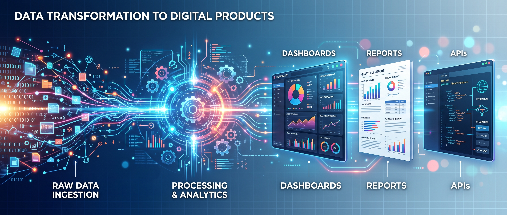
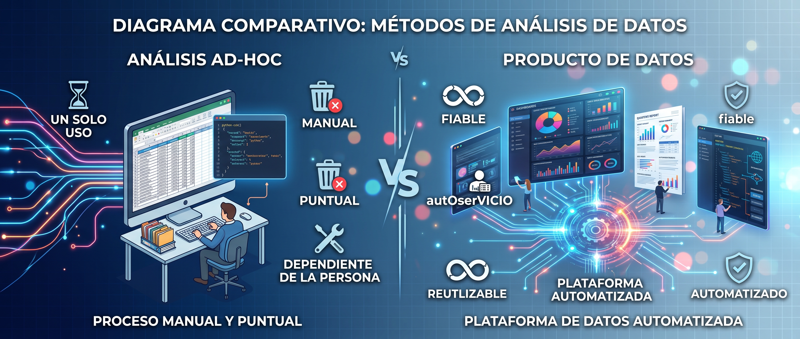
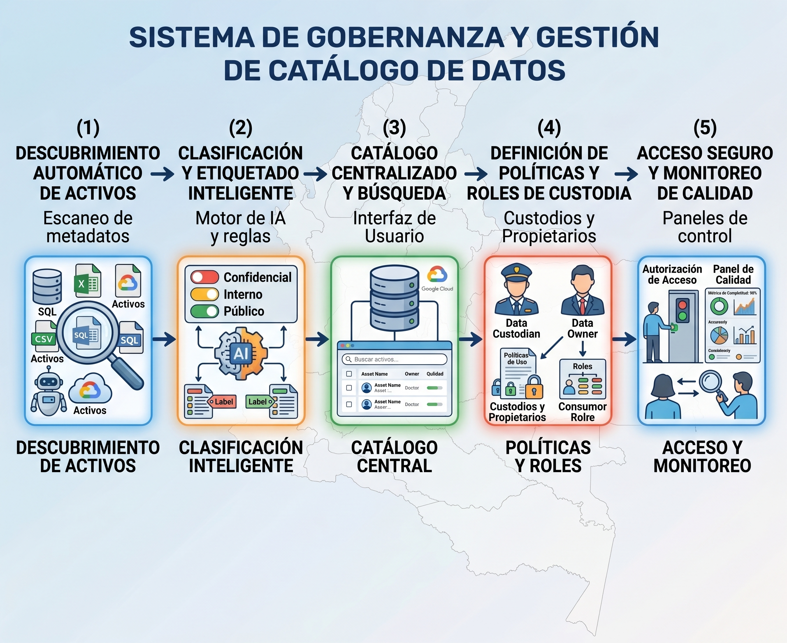
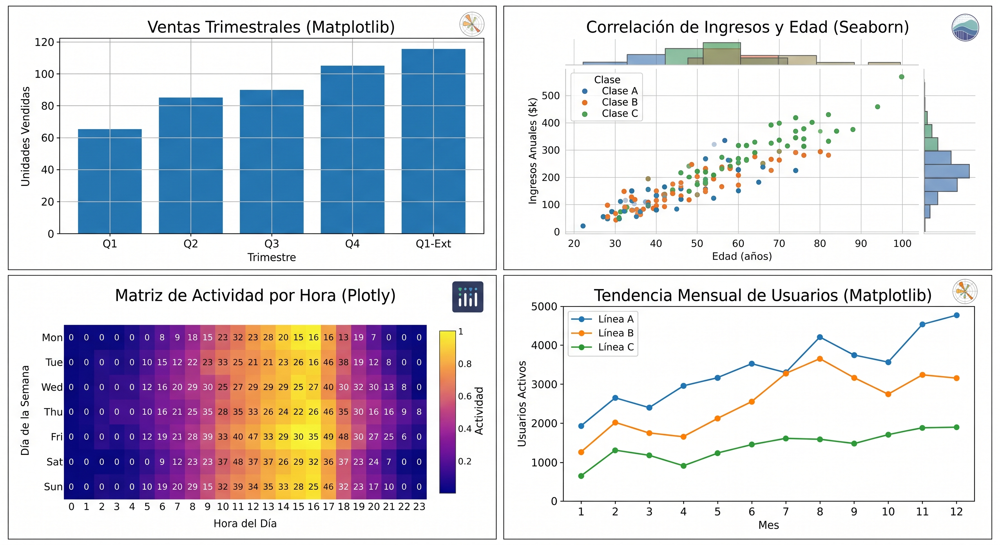
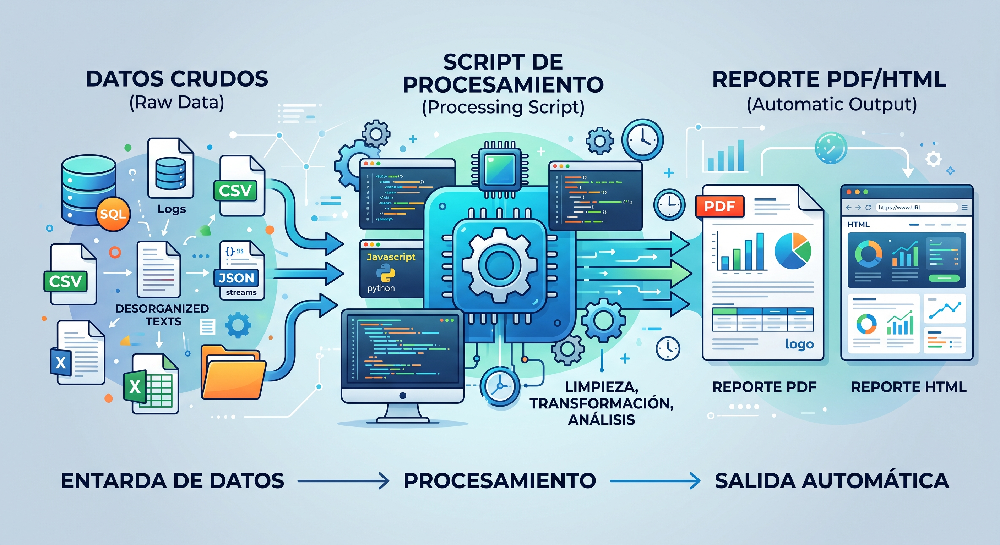
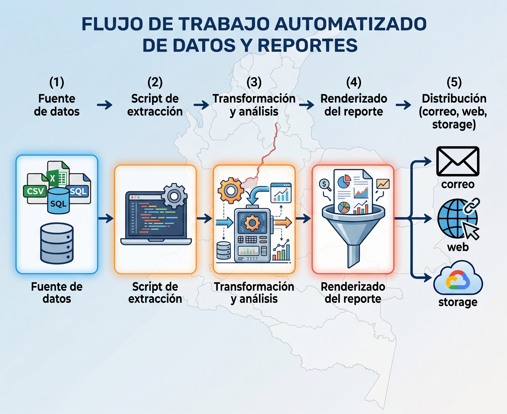

Unidad 1 - Introducción a Desarrollo de Productos de Datos#
{kind=link}

Presentación de la unidad#
Antes de construir un producto de datos, necesitamos hablar el mismo idioma. Esta unidad sienta las bases: desde manipular datos con Python, pasando por limpiarlos y visualizarlos, hasta generar reportes que se producen solos.
La idea es simple — si un analista repite el mismo informe cada semana, ese proceso debería ser código, no trabajo manual.
¿Qué es un producto de datos?#
{kind=link}

Un producto de datos es cualquier solución basada en datos que entrega valor de forma repetible y autoservicio a un consumidor — ya sea una persona, otro sistema o un proceso de negocio. A diferencia de un análisis puntual que responde una pregunta y se archiva, un producto de datos está diseñado para vivir en producción: se actualiza, se mantiene y escala.
Algunos ejemplos concretos:
Un dashboard que muestra en tiempo real las ventas por región.
Un reporte automatizado que llega cada lunes al correo del gerente.
Una API que devuelve predicciones de demanda a un sistema ERP.
Una aplicación web donde el equipo de marketing segmenta clientes sin escribir código.
Durante esta unidad construiremos las habilidades fundamentales para llegar a esos productos.
Subsección 1.1 — Python para datos#
{kind=link}
¿Por qué empezar aquí?#
Todo producto de datos tiene código detrás. No necesitamos ser expertos en ingeniería de software, pero sí necesitamos manejar con soltura las estructuras fundamentales para poder automatizar, transformar y presentar datos.
Temas que revisaremos#
Listas, diccionarios, tuplas, sets. Cómo elegir la estructura correcta según el problema.
Creación, indexación, filtrado, agrupación, joins y transformaciones con pandas.
Escribir código reutilizable: funciones, scripts organizados y buenas prácticas de nombrado.
CSV, Excel, JSON, bases de datos. Conectarse a las fuentes de datos más comunes.
Herramientas que usaremos#
Herramienta |
Uso principal |
|---|---|
Jupyter Notebook / Lab |
Exploración y prototipado rápido |
VS Code |
Desarrollo de scripts y proyectos |
Git / GitHub |
Control de versiones y colaboración |
pandas |
Manipulación y limpieza de datos |
Nota
Python será el lenguaje base de todo el curso. Lo usaremos de forma consistente desde la exploración hasta el despliegue en producción.
Subsección 1.2 — Limpieza y normalización de datos#
{kind=link}

¿Por qué importa?#
Un producto de datos es tan bueno como los datos que consume. Si la fuente tiene valores faltantes, registros duplicados o valores atípicos sin tratar, cualquier dashboard, reporte o modelo que construyamos sobre esos datos será poco fiable.
Temas que abordaremos#
Detección, estrategias de imputación (media, mediana, moda, interpolación) y cuándo eliminar registros.
Identificación de registros repetidos, criterios para deduplicación, drop_duplicates y sus parámetros.
Detección con IQR, z-score y visualización. Decisión de corregir, transformar o conservar.
Min-max scaling, z-score, encoding de variables categóricas (one-hot, label encoding, ordinal).
En la práctica
La limpieza no es un paso que se hace una vez — en un producto de datos, se automatiza como parte del pipeline. Lo que aprendamos aquí lo reutilizaremos en la Unidad 4 cuando construyamos pipelines ETL.
Subsección 1.3 — Visualización de datos#
{kind=link}

El rol de la visualización#
Visualizar no es decorar — es la herramienta más rápida para encontrar patrones, detectar problemas y comunicar hallazgos. En un producto de datos, las visualizaciones son la interfaz entre los datos y el usuario final.
Librerías que usaremos#
La base. Control total sobre ejes, colores, anotaciones. Ideal para gráficos personalizados y publicaciones.
Gráficos estadísticos con una línea de código: distribuciones, correlaciones, heatmaps, boxplots.
Gráficos interactivos para dashboards y reportes web. Zoom, hover, filtros dinámicos.
Tipos de gráficos por objetivo#
Objetivo |
Gráfico recomendado |
|---|---|
Comparar categorías |
Barras, barras agrupadas |
Ver distribución |
Histograma, boxplot, violín |
Relación entre variables |
Dispersión, heatmap de correlación |
Evolución temporal |
Líneas, áreas |
Composición |
Torta (con mesura), barras apiladas |
Criterio clave
Elegir el gráfico correcto importa más que hacerlo bonito. Un gráfico mal elegido confunde; uno bien elegido explica sin necesidad de texto.
Subsección 1.4 — Reportes automáticos#
{kind=link}

El problema que resolvemos#
En muchas organizaciones, generar un reporte semanal implica:
Abrir Excel, copiar datos de varias fuentes.
Actualizar tablas y gráficos manualmente.
Formatear, exportar a PDF y enviar por correo.
Ese proceso es frágil, lento y propenso a errores. Un reporte automatizado reemplaza esos pasos con un script que se ejecuta solo y entrega el resultado listo para consumir.
¿Qué vamos a construir?#
Parametrizar notebooks para que se ejecuten con distintos datos de entrada y generen reportes HTML o PDF.
Plantillas dinámicas que combinan datos y visualizaciones para generar reportes en HTML o PDF con weasyprint.
Ejecutar reportes de forma programada: scripts con cron, tareas programadas o pipelines simples.
Enviar el resultado por correo, subirlo a un servidor o publicarlo como página web estática.
Flujo típico de un reporte automatizado#
{kind=link}

Resultado esperado
Al finalizar esta unidad, cada estudiante habrá construido un reporte automatizado que toma datos de una fuente, genera visualizaciones y se exporta en formato HTML o PDF sin intervención manual.
Datos utilizados en la unidad#
Nota
Recurso 📂 Data